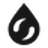
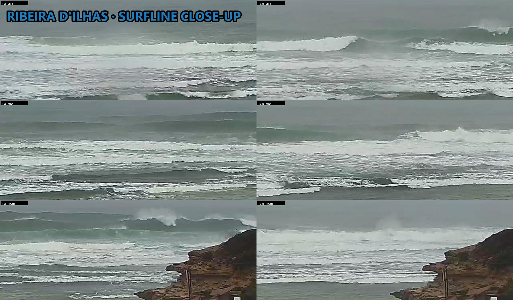
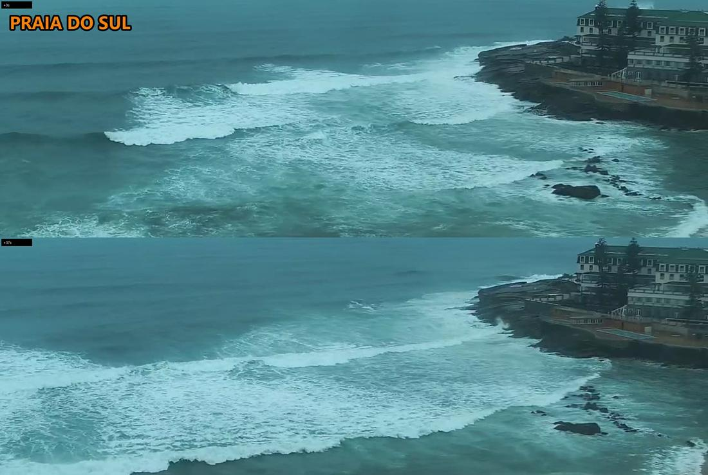
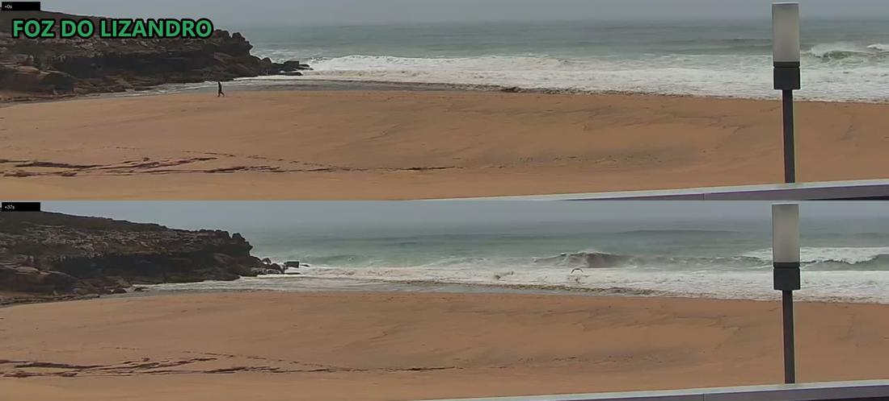

Ribeira
2.4–3.7m★💤 Skip
0 surfers
3m sets closing out across the point, rain haze; close-up L0 M0 R0 / L0 M0 R0 -> 0
lunch slot · run 372
| Ribeira | ★ | 2.4-3.7m |  | closing out | -1★ | 0 |
|---|---|---|---|---|---|---|
| Norte | ★★ | 2.4-3m | ||||
| Sul | ★ | 2.4-3m | storm foam | -1★ | 0 | |
| Pedra | ★★★ | 2.4-3m | cam down | - | ||
| Lizandro | ★★ | 2.4-3m | dumping shore | -1★ | 0 |
| Ribeira | ★ | 2.4-3.7m | |
|---|---|---|---|
| Norte | ★★ | 2.4-3m | |
| Sul | ★ | 2.4-3m | |
| Pedra | ★★★ | 2.4-3m | |
| Lizandro | ★★ | 2.4-3m |
| Ribeira | closing out | -1★ | 0 |
|---|---|---|---|
| Sul | storm foam | -1★ | 0 |
| Pedra | cam down | - | |
| Lizandro | dumping shore | -1★ | 0 |



2.4–3.7m★💤 Skip
0 surfers
3m sets closing out across the point, rain haze; close-up L0 M0 R0 / L0 M0 R0 -> 0
2.4–3.0m★★🤔 Marginal
surfers unclear
no frames this run; forecast only
2.4–3.0m★💤 Skip
0 surfers
storm whitewater sheets over reef, no green shoulder; detail readable, nobody out; 0
2.4–3.0m★★★👍 Worth surfing
🚫 cam down
cam down; forecast only
2.4–3.0m★★🤔 Marginal
0 surfers
dumping walls on the shorebreak; 1 walker on sand, nobody in water; 0